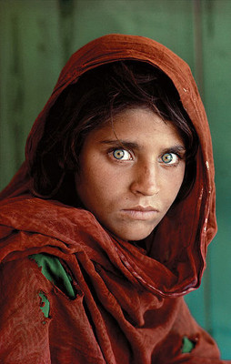
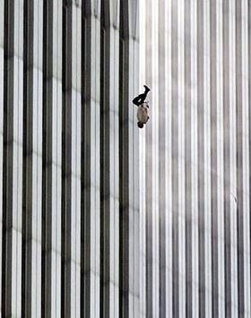

Migrant Mother
Dorothea Lange
A compassionate portrait that became an enduring image of resilience during the Great Depression.
Collection 04
See how a single frame can preserve a feeling, a place, or a moment in history.
Favourites: 0
Dorothea Lange
A compassionate portrait that became an enduring image of resilience during the Great Depression.

Steve McCurry
A powerful portrait remembered for its direct gaze and vivid colour.

Charles C. Ebbets
Workers share a lunch break above Manhattan in a striking record of city-building.

Ansel Adams
Carefully balanced light and shadow give this landscape its dramatic clarity.

William Anders
A view of Earth from lunar orbit that changed how many people pictured our planet.

Richard Drew
A difficult and widely discussed image that documents a moment in modern history.